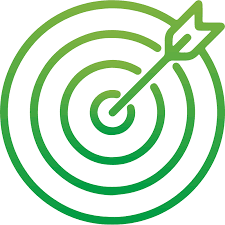
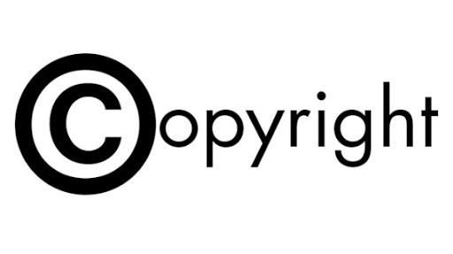

Keamanan Sistem Informasi Dan Etika
Download ModuleKeamanan Sistem Informasi
Sistem informasi adalah sekumpulan perangkat keras (hardware), perangkat lunak (software), brainware, dan segala prosedur yang tertata secara teratur yang berguna untuk mengolah dan memproses data menjadi suatu informasi yang berguna sebagai alat memecahkan masalah dan pengambilan keputusan.
Hal yang paling sering terjadi pada komputer adalah serangan virus.
Contoh dari virus komputer antara lain:
Worm: dapat memperbanyak dirinya sendiri pada hardisk, sehingga sumber
daya menjadi penuh dengan worm.
Macro Virus: menyerang sistem operasi pada program tertentu dan
bersembunyi pada RAM yang jika dibiarkan dapat menyerang hardisk.
Pengamanan pada perangkat lunak (software).
Gunakan anti virus guna menangkal adanya virus komputer.
Jangan menggunakan software bajakan karena resiko kerusakan yang
besar
Pengertian Informasi
Informasi adalah data yang sudah diolah yang kemudian menjadi
sesuatu yang berguna dalam pengambilan keputusan. Informasi didapatkan
dari proses pengumpulan fakta dan data dengan suatu metode tertentu.
Pengertian informasi menurut para ahli:
a. Kamus Besar Bahasa Indonesia
Informasi dijelaskan sebagai penerang, pemberitahuan, kabar/berita
tentang sesuatu.
b. Gordor B. Davis
Menyatakan informasi sebagai data yang sudah diolah menjadi bentuk
yang nyata yang dapat dirasakan dalam keputusan-keputusan yang
sekarang maupun keputusan yang akan datang.
c. Anton M. Moeliono
Menjelaskan informasi sebagai penerangan, keterangan, pemberitahuan
kabar atau berita dan merupakan keterangan atau bahan data yang dapat
dijadikan dasar kajian analisis atau kesimpulan
jenis-jenis informasi
a. Absolute Information
Merupakan informasi yang tidak perlu penjelasan karena disampaikan
dengan jaminan.
b. Substitusional Information
c. Informasi yang memiliki konsep informasi yang dipergunakan untuk
sejumlah informasi dan terkadang penyebutannya diganti dengan istilah
komunikasi.
d. Philosophic Information
Adalah informasi yang memiliki hubungan tentang konsep yang
menghubungkan informasi antara pengetahuan dan kebijakan.
e. Subjective Information
Informasi yang memiliki hubungan antara perasaan dan informasi manusia.
Informasi ini tergantung pada siapa dan bagaimana orang yang
menyampaikannya.
f. Objective Information
Adalah jenis informasi yang merujuk pada karakter logis pada informasi
tertentu.
g. Cultural Information
Informasi yang memberikan tekanan pada dimensi cultural.
cara dalam mendapatkan informasi
a. Hasil dari suatu penelitian.
b. Media elektronik seperti televisi, radio dan internet.
c. Media cetak seperti koran, buku, majalah dan karya ilmiah.
d. Informasi yang diambil dari instansi pemerintahan.
Menurut Mc. Leod suatu informasi bisa dikategorikan sebagai informasi
jika memiliki ciri-ciri sebagai berikut:
a. Akurat, mencerminkan keadaan yang sebenarnya.
b. Tepat waktu, berarti informasi harus ada pada saat diperlukan.
c. Relevan, informasi diberikan harus sesuai dengan yang dibutuhkan.
d. Lengkap, informasi harus utuh, tidak setengah-setengah.
Etika dalam Sistem Informasi
a. Privasi
Privasi dibagi menjadi 2, yaitu privasi fisik yang berarti hak
seseorang untuk mencegah orang lain yang tidak di izinkan atau tidak
dikehendaki terhadap waktu, ruang dan property (hak milik), dan privasi
informasi yang berarti hak tiap individu untuk menentukan kapan,
bagaimana, dan apa saja yang ingin dikomunikasikan dengan orang lain.
| akurasi | Properti (Hak Milik) |
|  |  |
| Trademark | Akses |
Etika Menggunakan Komputer
Pada tahun 1992, koalisi etika komputer yang tergabung dalam
lembaga etika komputer (CEI) memfokuskan pada kemajuan teknologi
informasi, etik dan perusahaan serta kebijakan publik. CEI mengalamatkannya
pada kebijakan organisasi, publik, indutrial, dan akademis. Lembaga ini
memperhatikan perlunya isu mengenai etika berkaitan degan kemajuan
teknologi informasi dalam masyarakat dan telah menciptakan sepuluh perintah
etika komputer:
a. Tidak menggunakan komputer untuk merugikan orang lain.
b. Tidak mengganggu pekerjaan komputer orang lain.
c. Tidak memata-matai file komputer orang lain.
d. Tidak menggunakan komputer untuk mencuri.
e. Tidak menggunakan komputer untuk bersaksi palsu.
f. Tidak menyalin atau menggunakan kepemilikian perangkat lunak dimana
anda belum membayarnya.
g. Tidak menggunakan sumber daya komputer orang lain tanpa otorisasi atau
kompensasi yang sesuai.
h. Tidak mengambil untuk diri sendiri karya intelektual orang lain.
i. Harus memikirkan tentang konsekuensi sosial program yang anda tulis
bagi sistem yang anda desain.
j. Harus menggunakan komputer yang menjamin pertimbangan dan bagi
sesama manusia.